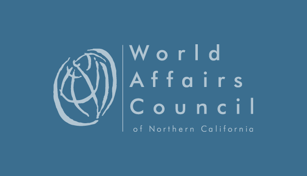

|

The Philippine archipelago is composed of 7,107 islands and some 80 major ethno-linguistic groups that make Philippine society a complex and diverse one. These groups practice distinct culture traditions and are further identified by their languages and dialects. Natividad Sugguiyao, an Indigenous woman leader from Cordillera Region in Northern Luzon, joins us at a dinner event to share stories about her culture and way of life of the Kalinga ethnic group. The Kalinga Peoples - living in a beautiful area of rice terraces and the white water rapids of the Chico River - are known for their strong sense of tribal awareness and were never subdued by Spanish colonizers in their more than 300-year reign in the Philippines. The Kalinga have rich cultural traditions and expressions of music, dance and artisan work. They continue to enforce the “bodong” or peace pacts within the sub-tribes to resolve tribal conflicts. Scholars and enthusiasts worldwide now flock to the province to learn the ancient method of “batok” or hand-tapped tattoo. Traditional clothing are still produced by the backstrap weavers and hand-embroidered by local artisans. A moderated dinner conversation with Ms. Sugguiyao will give participants an insider's view of preserving Kalinga traditions and rituals and the effect of globalization. She will also talk about how her region is coping with the new economy and her work promoting eco-tourism activities to improve the quality of life of the Kalinga Peoples. |